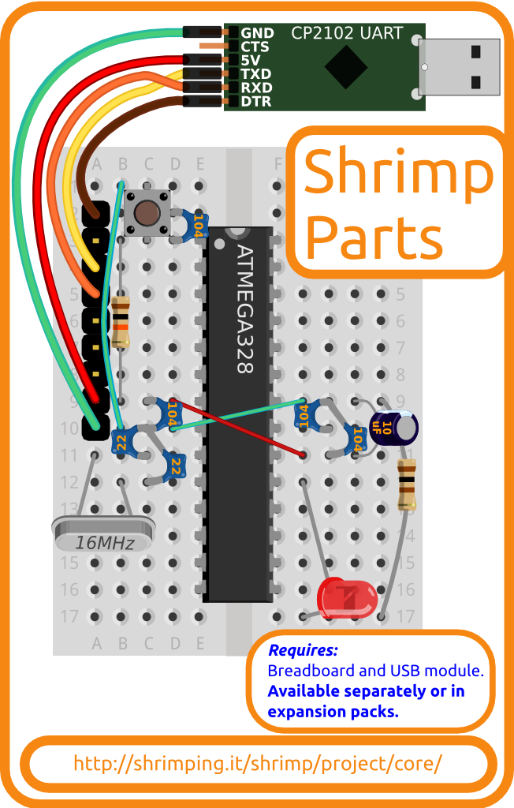

Shrimp Parts kit

The Shrimp Parts kit is a pre-bagged kit containing the microcontroller and supporting components of the Shrimp layout, central to all our Arduino-compatible @ShrimpingIt projects.
Learners begin with the ultra-minimal Blink which just controls a single LED. The Protected Build adds a few capacitors and buttons for deployment in challenging environments, so your Shrimp can substitute for an Arduino Uno in the tens of thousands of Arduino projects documented online.
For a more advanced example project to get started, combine it with one of our Addon kits to build a Persistence of Vision, Alarm Clock, Conductive Keyboard, Memory Game or LED Clock following the step by step wiring guides and using our example programs.
Sourcing Kits and Bundles
The Shrimp Parts kit is normally purchased along with a solderless breadboard to build the circuit and a USB UART module to program the circuit from your computer using the free Arduino IDE.
The component and wholesaler information for the project is linked below. We offer pre-bagged kits through our retail bagging service, including bundles with a breadboard and UART, if you want to avoid the complexity of sourcing your own.
Our £9.30 Shrimp Bundle includes.
- The Shrimp Parts kit listed below
- A 400point Breadboard (to build the circuit on)
- A USB UART module (for uploading programmed behaviours to your Shrimp)
Our £4.00 Shrimp Parts kit includes...
- Arduino-Uno-compatible ATmega328P-PU bootloaded microcontroller
- 2x 22pF Ceramic Capacitor
- 4x 100nF Ceramic Capacitor
- A 10uF Electrolytic Capacitor
- A 10KΩ 1/2W Carbon Film Resistor
- A A 100Ω 1/2W Carbon Film Resistor
- A 16MHz Quartz Crystal
- A Two-pin button
- A Water Clear Ultrabright Red LED
- 1xRed 2xGreen Stripped solid core 22AWG wire
- A 9-pin header strip
See the pathways map for a pricing breakdown and to find accessories to build @ShrimpingIt projects using these components.
If you choose to source your own kits, note the self-sourcing caveats. Also please let us know if you have any difficulty with any of the supplier links provided above.